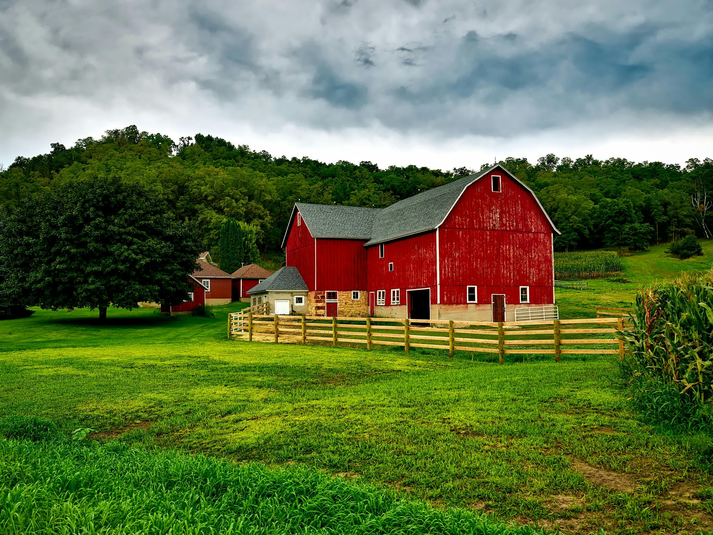
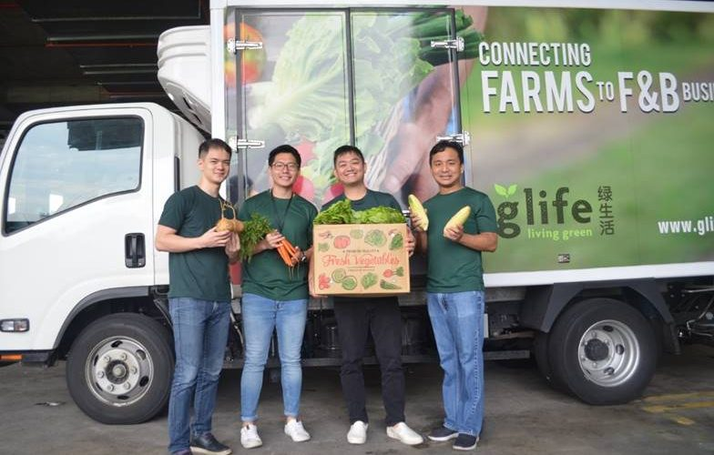
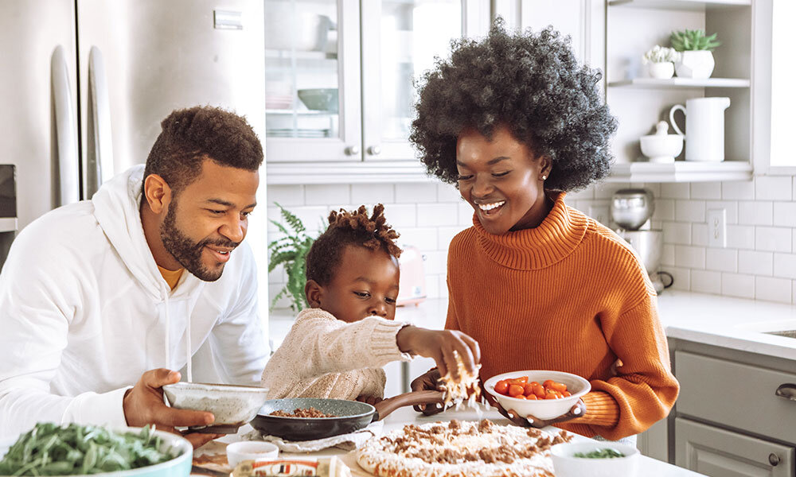

BioRoyal was founded out of a desire to offer natural, healthy, and environmentally friendly products. Since 2010, we have been dedicated to bringing only certified organic products to our customers' tables.
BioRoyal was founded by a group of organic farming enthusiasts who wanted to promote a healthy lifestyle through the highest quality natural products.
We collaborate with local and international organic farms, ensuring our products meet the highest quality and sustainability standards.
Our products are obtained using traditional methods, without the use of pesticides or harmful chemicals.

We are committed to offering the highest quality organic products while respecting the environment and supporting local communities. Transparency, responsibility, and respect for nature are at the core of our values.
